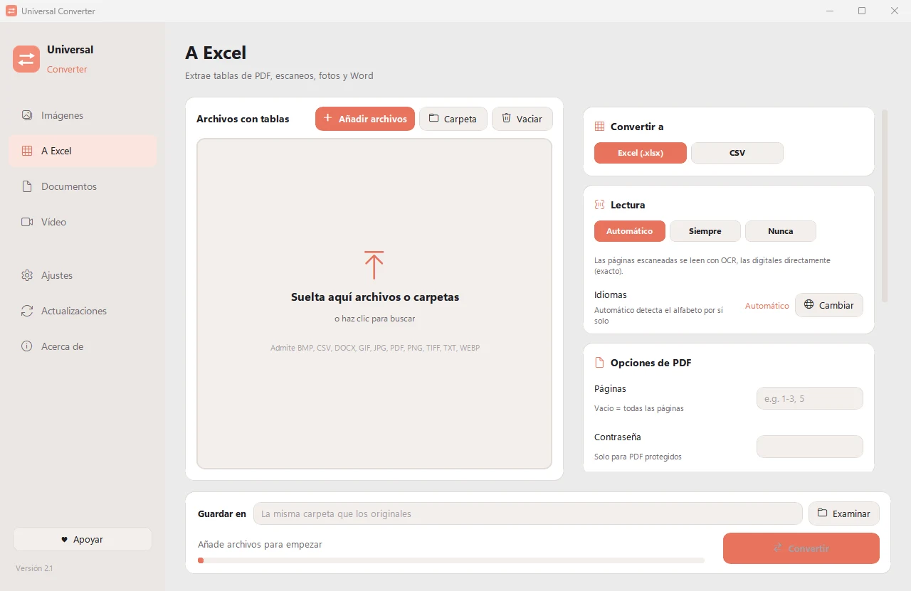

Extraer tablas de facturas en PDF a Excel
Copiar líneas de facturas a mano es lento y provoca errores. Universal Converter encuentra las tablas de cada factura, sea PDF, escaneo o foto, y las coloca en una hoja de cálculo que puede ordenar, sumar e importar.
Gratis · Windows 10 y 11, 64 bits · Análisis antivirus
Descargar para Mac (beta) Apple silicon, macOS 12 o posterior
Descargar para Android Android 10 o posterior
Cómo hacerlo
- Abre Universal Converter y elige A Excel a la izquierda.
- Arrastra tus archivos o una carpeta entera a la ventana, o pulsa Añadir archivos.
- Elija Excel (o CSV). Añada varias facturas a la vez para convertirlas de una sola vez.
- Pulsa Convertir. Los archivos nuevos se guardan junto a los originales o en la carpeta que elijas.

¿Por qué sin conexión?
Universal Converter hace el trabajo en tu propio dispositivo. Tus archivos siguen siendo privados, los archivos grandes no son problema y funciona sin conexión a internet.
Más cosas que puede hacer
- Comprimir un vídeo sin subirlo
- Convertir vídeos entre MP4, MKV, WebM, MOV y AVI
- Guardar el sonido de un vídeo en MP3
- Crear un GIF a partir de un vídeo
- Pasar tablas de un PDF a Excel
- Unir fotos en un solo PDF
- Convertir un PDF a Word
- Unir varios archivos en un PDF
- Copiar el texto de una imagen (OCR)
- Convertir imágenes entre JPG, PNG, WEBP y más
- Cambiar el tamaño de imágenes o reducirlas a un tamaño de archivo
- Convertir un extracto bancario en PDF a Excel
- Convertir un documento escaneado en un Word editable
- Convertir páginas de PDF a imágenes JPG
- Convertir documentos de Word a PDF